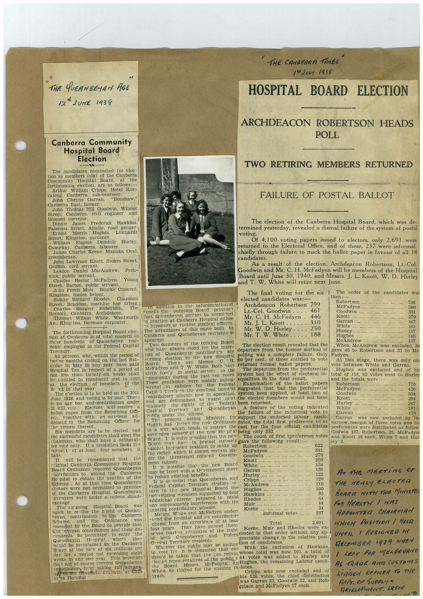

Book 1 · scan 007


Description
Transcription
Context
Review notes
Compare the machine draft with the scan. Handwriting and names need human review.
Artifacts
Edit the artifacts field in this note’s frontmatter to change these records. This summary is generated.
B01-S007-A01 — Newspaper clipping & Handwritten note — Book 1, scan 007
Types: Newspaper clipping, Handwritten note
Scope: Whole scanned page; individual items can be split out during review.
Caption: Not mapped yet.
Caption source: Not recorded yet.
Caption status: unmapped
Machine transcription
THE QUEANBEYAN AGE 12 * JUNE 1938 "THE CANBERRA Tints" 1 Jusy 1938 HOSPITAL BOARD ELECTION ARCHDEACON ROBERTSON HEADS POLL Canberra Community Hospital Board Election The candidates nominated for elec- tion as members (six of the Canberra Community Hospital Board at forthcoming election. are as follows:- Arthur William Cripps, Hotel Kur- ta long. Canberra. sub-overseer. John Cheyne Garran, "Bonshaw," Canberra East, farmer. John Thomas Hill Goodwin, Wilmot Street, Canberra. civil - engineer and licensed sulvevor Dinnie James Frederick Hawkins. Paterson Street. Ainslie, road ganger. Ernest Morris Hughes, Leichardt Street, Kingston, gardener. William Dominic Hurley, Causewav. Canberra. labourer. James Charles Keene, Manuka Oval, groundsman. John Lawrence Knott, Stokes Street, Grifth, civil servant. Lawson Daniel MacAndrew. Fysh- wick, public servant. Charles Hector McFadyen. Young Street, Barton, public servant. Jchn Ferels Muir. Bourke Crescent, Kingston, trades helper. Sidney Richard Rhodes. Chapman Braddon, macome noe aver Charles Robertson, The Rectory. Canberra, Thomas Wilson Archdeacon. White, Wentworth Av., Kingston, foreman carpenter. The forthcoming Hospital Board elec- tion at Canberra is of vital concern to these hundreds of Queanbeyan dents employed in the Federal Capital Territory. All persons, whe, within the period of twelve months ending on the last Sat- urday in May in any year. have paid Hespital Tax in respect of a period of not less than twenty-six weeks shall be entitled to enrolment the and to vote election of members of the Brid in that year The e'ection is to be held on the 30th June. 1938. and voting is by post. There is no age bar. and contributors under 21 will vote. Elestors will receive ballot paper from the Returning om- together with an envelope ad- dressed to the Returning Oficer for the return thereof. Six members are to be elected. and the successful candidates shall elect the chairman. who shall have a deliberat- ive vote only. If a resolutien lacks the curpot of at least four members, it fails. It will be remembered that niginal Canberra Community Hespital Board Ordinance required Queanbeyan contributors to attend the Canberra Ho pital to obtain the benefits of the Scheme. As at that time Queanbevan cectors were not permitted to practice at the Canberra Hospital. Queanbeyan 'axpayers were under a serious disad- was vase. The Hospital Board was quick to realise the p'ight of Quean- revan contributors to the Canberra Scheme. and the Ordinance was amended by the Board to provide that Gue beyan contributors and their de- mendents be permitted to enter the Queanbeyan Hespital. where weuld be maintained by the Canberra Board at the rate of six shillings per day for a period not exceeding eight weeks in any one year This provision doc: not of course prevent Queanbevan contributors frem taking fall advant et mac ricatment avallable at Can be a Ho nital TWO RETIRING MEMBERS RETURNED FAILURE OF POSTAL BALLOT The election of the Canberra Hospital Board, which was de- termined yesterday, revealed a dismal failure of the system of postal voting. Of 4,100 voting papers issued to electors, only 2,69l were returned to the Electoral Office, and of these, 237 were informal, chiefly through failure to mark the ballot paper in favour of all 14 candidates. As a result of the election, Archdeacon Robertson, Lt.-Col. Goodwin and Mr. C. H. McFadyen will be members of the Hospital Board until June 30, 1940, and Messrs. J. L. Knott, W. D. Hurley and T. W. White will retire next June. The final voting for the six 1 The order of the candidates was elected candidates was:- then: m addition to the beforementioned Robertson outgoing Board Archdeacon Robertson 799 McFadyen 706 hones one provider 380 Lt.-Col. Goodwin .... 461 that Queanbevan destors be permitted Goodwin 331 *o practice at Canberra Hespital either Mr. C. H. McFadyen 446 Knott .... 270 s honorary or visiting medical ofeers Mr. J. L. Knott 310 Garran The advantages of this move both Mr. W. D. Hurley 250 White 167 161 Canberra and Queanbeyan residents is Hurley Mr. T. W. White 188 Hughes 157 apparent. Two members of the retiring Board McAndrew 145 137 who have alwavs stood fer the inter- The election result revealed that the . When McAndrew was excluded, he ests of Queanbeyan contributo"s are departure from the former method of gave 45 to Robertson and 31 to Me. sceking election to the new Hospital polling was a complete failure. Only Fadyen. Board. These are Messrs 60 per cent. of those entitled to vote At this stage, there was only one McFadven and T W. White. Both have returned formal ballot papers. vote between White and Garran. given free y in social service to the The departure from the preferential Hughes excluded and of his communit during the past ten years. system had the effect of electoral in- total of 158, 85 votes went to Hurley These gentlemen were mainly instru- equalities in the final result. Examination and the totals of the ballot papers Robertson mental in gaining the Federal 770 Capit-l Territory the excellent hosnial suggested that had the preferential McFadyen contributory scheme now in operation. system been applied, at least two of 430 Goodwin 354 are determined to guard most the elected members would not have Knott and the rights of the 294 Federal been returned. Hurley 247 zealously and Queanbeyan A feature of the voting indicated White 181 Capi'al Public under the rcheme. the failure of the industrial vote to Garran ... present acting Minister for support the endorsed labour candi- Garran 178 was now excluded by the Health has -Itered the new Ordinance dates, the total first preference voles in a way which tends to restrict the cast for the four official candidates narrow margin of three votes and hi preferences were distributed as follow governing powers cf the new He pital being only 332. Godwin 107, Robertson, 29, McFadyer Beard. It is cuite possible that the new The count of first preference votes and Knott 16 each, White 7 and Hur Beard may have to protest strongly gave the following result: ley 3. against increased taxation to make up Robertson ….. 682 the defieit which is almost certain un- McFadyen …... .. 341 der the threatened redured Govern- Goodwin 278 ment subsidy. Knott .... 250 It is possible that the new Board White... may be faced with a Grvernment move Garran .... to reduce existing benefits. Hurley …... It is esential that Queanbevan and Cripps 130 122 120 AT THE MEETING OF Federal Capital Territory electors re- THE NEWLY ELECTRA turn to the new Hospital Board the twn retiring members supported by four additical citizens prepared to resist any unreasonable interference with the existing contributory scheme. Hughes.... Hawkins …... Rhodes.... Muir Keene... Mests. White and McFadyen under- Informal votes.... 100 95 64 44 34 237 BOARD WITH THE MINISTE FOR HERATHi / WAS APPOINTER CHRIRMAN tond the hospital and its contributor cheme from an exerience of at leas Total 2,691 four years. They have proved them WHICH POSITION / HELD se ves fearles advecates of the right Keene, Muir and Rhodes were ex- of beth ©neanbevan and Federa cluded in that order without any ap-l UNTIL 1 RESIGNED IN preciable change in the relative posi- C-nital Territory residents. Whoever the public may be incline tion of candidates. to vote fer it is suggested that car With the exclusion of Hawkins, DECEMBER 1939 WHEN shou'd be taken that the iwo retirin whose total was now 101, a total of -lected representatives of the public 44 votes was added to Hurley and / LEFT FOR MELBOURNe Board. Messis. McFadyen an Hughes, the remaining Labour candi- AS TRADE AND CUSTOmS White, be elected for the ensuing twdates. Cripps was now excluded and of vears. his 126 votes, the chief distribution| LIAISON OFFICER TO THe was Garran 33, Goodwin 32, and Rob- ertson and McFadyen 17 each. REPT. OF SUPPLY* DEYELOPMENT. LATeR